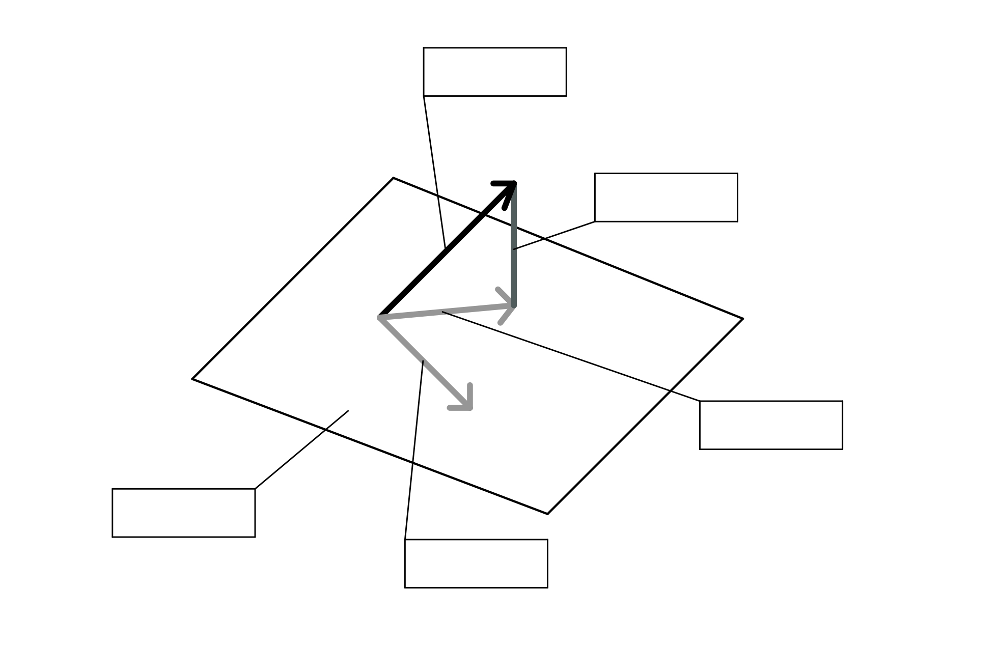
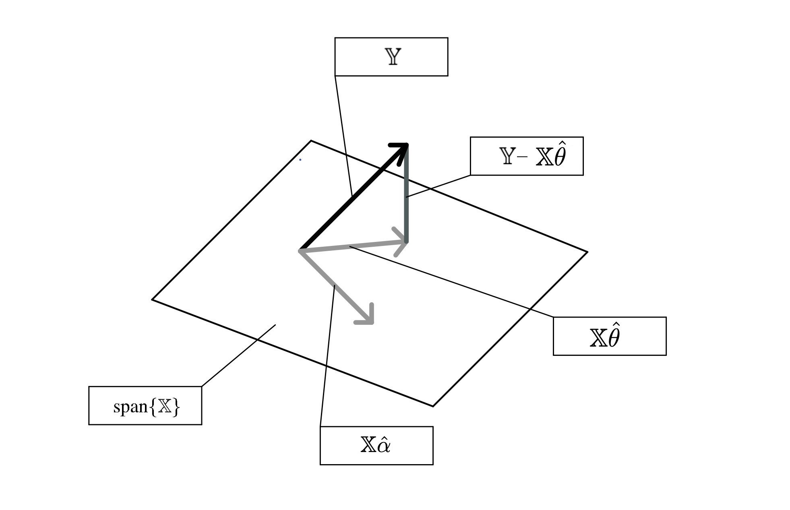

7 Models, OLS
7.1 Driving with a Constant Model
Lillian is trying to use modeling to drive her car autonomously. To do this, she collects a lot of data from driving around her neighborhood and stores it in drive. She wants your help to design a model that can drive on her behalf in the future using the outputs of the models you design. First, she wants to tackle two aspects of this autonomous car modeling framework: going forward and turning. Some statistics from the collected dataset are shown below using drive.describe(), which returns the mean, standard deviation, quartiles, minimum, and maximum for the two columns in the dataset: target_speed and degree_turn.
| target_speed | degree_turn | |
|---|---|---|
| count | 500.000000 | 500.000000 |
| mean | 32.923408 | 143.721153 |
| std | 46.678744 | 153.641504 |
| min | 0.231601 | 0.000000 |
| 25% | 12.350025 | 6.916210 |
| 50% | 25.820689 | 45.490086 |
| 75% | 39.788716 | 323.197168 |
| max | 379.919965 | 359.430309 |
7.1.1 (a)
Suppose the first part of the model predicts the target speed of the car. Using constant models trained on the speeds of the collected data shown above with \(L_1\) and \(L_2\) loss functions, which of the following is true?
A. The model trained with the \(L_1\) loss will always drive slower than the model trained with \(L_2\) loss.
B. The model trained with the \(L_2\) loss will always drive slower than the model trained with \(L_1\) loss.
C. The mode trained with the \(L_1\) loss will sometimes drive slower than the model trained with \(L_2\) loss.
D. The model trained with the \(L_2\) loss will somtimes drive slower than the model trained with \(L_1\) loss.
Answer
A. The model trained with the \(L_1\) loss will always drive slower than the model trained with \(L_2\) loss.
Remember that when we have a constant model, using \(L_1\) will always predict the median while \(L_2\) loss will always predict the mean. Since the median (\(25.82\)) is lower than the mean (\(32.92\)), we know that the model trained on \(L_1\) loss will always drive slower.
7.1.2 (b)
Finding that the model trained with the \(L_2\) loss drives too slowly, Lillian changes the loss function for the constant model where the loss is penalized more if the true speed is higher. That way, in order to minimize loss, the model would have to output predictions closer to the true value, particularly as speeds get faster, the end result being a higher constant speed. Lillian writes this as \(L(y, \hat{y}) = y(y-\hat{y})^2\).
Find the optimal \(\hat{\theta}_0\) for the constant model using the new empirical risk function \(R(\theta_0)\) below:
\[\begin{align*} R(\theta_0) = \frac{1}{n}\sum_i y_i(y_i-\theta_0)^2 \end{align*}\]
Answer
Take the derivative: \[\begin{align} \frac{dR}{d\theta_0} &= \frac{1}{n} \sum_i \frac{d}{d\theta_0}y_i (y_i - \theta_0)^2 \\ &= \frac{1}{n} \sum_i -2y_i (y_i - \theta_0) = -\frac{2}{n} \sum_i y_i^2 - y_i\theta_0 \end{align}\] Set the derivative to 0: \[\begin{align} -\frac{2}{n} \sum_i y_i^2 - y_i\theta_0 = 0 \\ \theta_0 \sum_i y_i = \sum_i y_i^2\\ \theta_0 = \frac{\sum_i y_i^2}{ \sum_i y_i } \end{align}\]
Note that the empirical risk function is convex, which you can show by computing the second derivative of \(R(\theta_0)\) and noting that it is positive for all values of \(\theta_0\).
\[\frac{d^2R}{d\theta_0^2} = \frac{2}{n} \sum_i y_i > 0\] since \(y_i\) represents speed, also validated by the fact that the minimum value is positive.
Therefore, any critical point must be the global minimum and so the optimal value we found minimizes empirical risk.
7.1.3 (c)
Lillian’s friend, Yash, also begins working on a model that predicts the degree of turning at a particular time between 0 and 359 degrees using the data in the degree_turn column. Explain why a constant model is likely inappropriate in this use case.
Extra: If you’ve studied some physics, you may recognize the behavior of our constant model!
Answer
Any constant model will essentially be always turning at an angle and will be unable to turn either direction or go straight (i.e., it’ll essentially go in a circle forever).
7.1.4 (d)
Suppose we finally expand our modeling framework to use simple linear regression (i.e., \(f_\theta(x) = \theta_{w,0}+\theta_{w,1}x\)) For our first simple linear regression model, we predict the turn angle (\(y\)) using target speed (\(x\)). Our optimal parameters are: \(\hat{\theta}_{w, 1}=0.019\) and \(\hat{\theta}_{w,0}=143.1\)
However, we realize that we actually want a model that predicts target speed (our new \(y\)) using turn angle, our new \(x\) (instead of the other way around)! What are our new optimal parameters for this new model?
Answer
To predict target speed (new \(y\)) from turn angle (new \(x\)), we need to compute \(\hat{\theta}_1=r*\frac{\sigma_{\text{speed}}}{\sigma_{\text{turn}}}\)
When we predicted the turn angle from target speed, we computed \(\hat{\theta}_{w,1}=r*\frac{\sigma_{\text{turn}}}{\sigma_{\text{speed}}} = 0.019\)
Therefore, \(\hat{\theta}_1 = r * \frac{\sigma_{\text{speed}}}{\sigma_{\text{turn}}} = (r*\frac{\sigma_{\text{turn}}}{\sigma_{\text{speed}}})\frac{\sigma_{\text{speed}}^2}{\sigma_{\text{turn}}^2} = 0.019 * \frac{46.678744^2}{153.641504^2} \approx 0.00175\)
Then, \(\hat{\theta}_0 = \bar{y} - \hat{\theta}_1\bar{x} = 32.92 - 0.00175*143.72 = 32.67\)
Note that \(\bar{y}\) and \(\bar{x}\) are the means of target speed and turn angle respectively.
7.2 Geometry of Least Squares
Suppose we have a dataset represented with the design matrix span(\(\mathbb{X}\)) and response vector \(\mathbb{Y}\). We use linear regression to solve for this and obtain optimal weights as \(\hat{\theta}\). Label the following terms on the geometric interpretation of ordinary least squares:
- \(\mathbb{X}\) (i.e., span(\(\mathbb{X}\)))
- The response vector \(\mathbb{Y}\)
- The residual vector $ - \(\mathbb{X}\hat{\theta}\)
- The prediction vector \(\mathbb{X}\hat{\theta}\) (using optimal parameters)
- A prediction vector \(\mathbb{X}\alpha\) (using an arbitrary vector \(\alpha\))

Answer

A couple things to note:
- The rectangle represents span(\(\mathbb{X}\)), or everywhere that you’re able to get to with a linear combination of the columns of \(\mathbb{X}\). Therefore, \(\mathbb{X}\hat{\alpha}\) and \(\mathbb{X}\hat{\theta}\) must be the arrows in the rectangle.
- We know that the residual vector \(\mathbb{Y} - \mathbb{X}\hat{\theta}\) is orthogonal to span(\(\mathbb{X}\))
- \(\mathbb{X}\hat{\theta}\) is the best/closest to \(\mathbb{Y}\) in span(\(\mathbb{X}\)), so we know that it is the one that looks like it is the shadow of the bolded arrow representing \(\mathbb{Y}\)
7.3 Multiple Choice Questions
Using the geometry of least squares, let’s answer a few questions about Ordinary Least Squares (OLS)!
7.3.1 (a)
Which of the following are true about the optimal solution \(\hat{\theta}\) to OLS? Recall that the least squares estimate \(\hat{\theta}\) solves the normal equation \((\mathbb{X}^T\mathbb{X})\theta = \mathbb{X}^T\mathbb{Y}\)
\[\begin{align*} \hat{\theta} = (\mathbb{X}^T\mathbb{X})^{-1}\mathbb{X}^T\mathbb{Y} \end{align*}\]
\(\Box\) A. Using the normal equation, we can derive an optimal solution for simple linear regression with an \(L_2\) loss.
\(\Box\) B. Using the normal equation, we can derive an optimal solution for simple linear regression with an \(L_1\) loss.
\(\Box\) C. Using the normal equation, we can derive an optimal solution for a constant model with an \(L_2\) loss.
\(\Box\) D. Using the normal equation, we can derive an optimal solution for a constant model with an \(L_1\) loss.
\(\Box\) E. Using the normal equation, we can derive an optimal solution for the model \(\hat{y} = \theta_1x + \theta_2sin(x^2)\)
\(\Box\) F. Using the normal equation, we can derive an optimal solution for the model \(\hat{y} = \theta_1\theta_2 + \theta_2x^2\)
Answer
We can derive solutions to both simple linear regression and constant model with an \(L_2\) loss since they can be represented in the form \(y = x^T\theta\) in some way. Specifically, one of the two entries of \(x\) would be \(1\) for SLR (and the other would be the explanatory variable). The only entry for the constant model would be \(1\).
We cannot derive solutions for anything with the \(L_1\) loss since the normal equation optimizes for MSE.
Since option E is linear with respect to \(\theta\), we can use the normal equation. A good rule of thumb to determine if an equation is linear in \(\theta\) is checking if an expression can be separated into a matrix product of two terms:
\[\begin{align*} \hat{y} = \begin{bmatrix}x & sin(x^2)\end{bmatrix}\begin{bmatrix}\theta_1 \\ \theta_2\end{bmatrix} \end{align*}\]
Conversely, option F is not linear in \(\theta\) so we cannot use the normal equations.
7.3.2 (b)
Which of the following conditions are required for the least squares estimate in the previous subpart?
\(\Box\) A. \(\mathbb{X}\) must be full column rank
\(\Box\) B. \(\mathbb{Y}\) must be full column rank
\(\Box\) C. \(\mathbb{X}\) must be invertible
\(\Box\) D. \(\mathbb{X}^T\) must be invertible
Answer
A. \(\mathbb{X}\) must be full column rank
\(\mathbb{X}\) must be full column rank in order for the normal equation to have a unique solution. Otherwise, \(\mathbb{X}^T\mathbb{X}\) will not be invertible, and there will be infinite least squares estimates. Noth that invertibility is required of \(\mathbb{X}^T\mathbb{X}\): neither \(\mathbb{X}\) nor \(\mathbb{X}^T\) need to be invertible. \(\mathbb{X}\) and \(\mathbb{X}^T\) don’t even need to be square matrices! \(\mathbb{Y}\) is a vector so the matrix notion of “full column rank” does not really apply here (a vector will always span one dimension unless it is a vector of zeros).
7.3.3 (c)
What is always true about the residuals in the least squares regression? Select all that apply.
\(\Box\) A. They are orthogonal to the column space of the design matrix.
\(\Box\) B. They represent the errors of the predictions.
\(\Box\) C. Their sum is equal to the mean squared error.
\(\Box\) D. Their sum is equal to zero.
\(\Box\) E. None of the above.
Answer
A, B
(C) is wrong because the mean squared error is the mean of the sum of the squares of the residuals.
(D) A counter-example is:
\[\begin{align*} \mathbb{X} = \begin{bmatrix}2 & 3 \\ 1 & 5 \\ 2 & 4 \end{bmatrix}, \mathbb{Y} = \begin{bmatrix} 1 \\ 3 \\ 2 \end{bmatrix} \end{align*}\]
After solving the least squares problem, the sum of the residuals is \(-0.0247\), which is not equal to zero. However, note that this statement is, in general, true if the design matrix \(\mathbb{X}\) contains a column for the intercept!
7.3.4 (d)
Which of the following are true about the predictions made by OLS? Select all that apply.
\(\Box\) A. They are projections of the observations onto the column space of the design matrix.
\(\Box\) B. They are linear combinations of the features.
\(\Box\) C. They are orthogonal to the residuals.
\(\Box\) D. They are orthogonal to the column space of the features.
\(\Box\) E. None of the above.
Answer
(A), (B), (C)
(A) is correct because the predictions made by OLS is the vector in the column space of \(\mathbb{X}\) closest to the response vector \(\mathbb{Y}\), which is the orthogonal projection of \(\mathbb{Y}\) onto \(\mathbb{X}\).
(B) is correct because the predictions \(\mathbb{X}\hat{\theta}\) is a linear combination of the columns of \(\mathbb{X}\) (the features).
(C) is correct because we know that the predictions \(\mathbb{X}\hat{\theta}\) is the vector in span(\(\mathbb{X}\)) closest to \(\mathbb{Y}\). Therefore, \(\mathbb{Y} - \mathbb{X}\hat{\theta}\) (the residuals) must be orthogonal to the predictions.
(D) is not correct because the predictions are in the column space of the features.
7.3.5 (e)
Which of the following is true of the mystery quantity \(\vec{v} = (I - \mathbb{X}(\mathbb{X}^T\mathbb{X})^{-1}\mathbb{X}^T)\mathbb{Y}\)?
\(\Box\) A. The vector \(\vec{v}\) represents the residuals for any linear model.
\(\Box\) B. If the matrix \(\mathbb{X}\) contains the \(\vec{1}\) vector, then the sum of the elements in vector \(\vec{v}\) is 0 (i.e., \(\sum_iv_i = 0\))
\(\Box\) C. All the column vectors \(x_i\) of \(\mathbb{X}\) are orthogonal to \(\vec{v}\).
\(\Box\) D. If \(\mathbb{X}\) is of shape \(n\) by \(p\), there are \(p\) elements in vector \(\vec{v}\).
\(\Box\) E. For any \(\vec{\alpha}\), \(\mathbb{X}\vec{\alpha}\) is orthogonal to \(\vec{v}\).
Answer
(B), (C), (E)
The trick is to recognize the following:
\[\begin{align*} \vec{v} &= (I - \mathbb{X}(\mathbb{X}^T\mathbb{X})^{-1}\mathbb{X}^T)\mathbb{Y}\\ &= \mathbb{Y} - \mathbb{X}(\mathbb{X}^T\mathbb{X})^{-1}\mathbb{X}^T\mathbb{Y}\\ &= \mathbb{Y} - \mathbb{X}\hat{\theta} \end{align*}\]
which is the residual vector for an OLS model.
(A) is incorrect because any linear model does not create the residual vector \(v\); only the optimal linear model with weights \(\hat{\theta}\) does.
(D) is incorrect because the vector \(v\) is of size \(n\) since there are \(n\) data points.
The rest are correct by properties of orthogonality as given by the geometry of least squares.